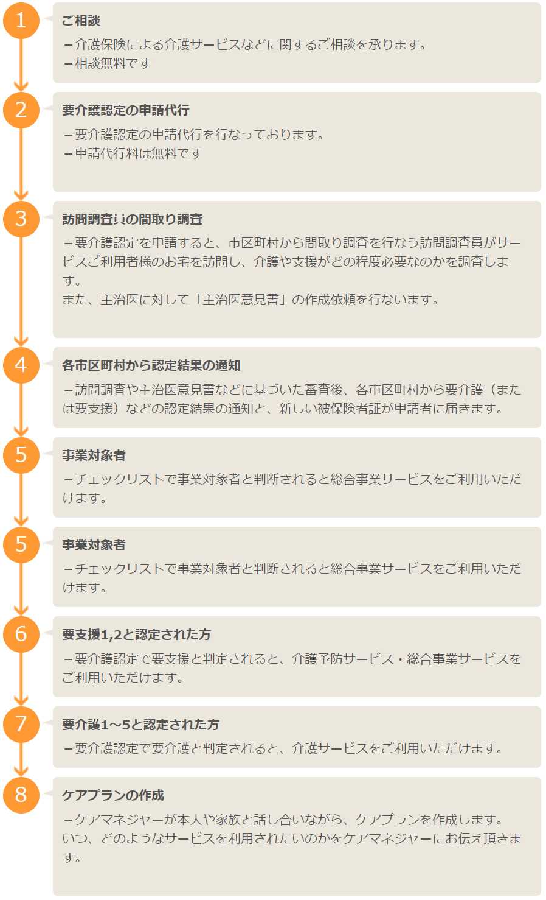

概要
ケアマネージャーが介護全般のご相談に応じ、ケアプランの作成を行うサービスです。 適切なサービスをご利用いただくために、ケアマネージャーはご利用者さまの状態や ご家族の要望をお伺いし、サービス計画(ケアプラン)を作成します。サービスを行う事業所の選定、ケアプランの変更が起きた場合の調整を行います。 介護に関するあらゆるご相談に応じ、介護サービスのトータルサポートをいたします。
提供サービス
○ケアプランの作成（＊費用はかかりません）
- 1ヵ月程度を単位として作成
- サービス計画の内容・利用料・保険の適用等を丁寧にわかりやすくご説明
- ご利用者さまやご家族の了解を得たうえで、主治医のご意見をお聞きすることも
- ご利用者さまの状態を正確にアセスメント
- ケアマネジャーを中心にサービス担当者会議（ケアカンファレンス）を開いて検討
○手続き代行・連絡調整・情報提供
- 市区町村の役所での要介護認定の申請・変更の代行
- 介護サービスを利用するために必要な連絡調整（市区町村・保健医療福祉サービス機関を含む）
- サービスの管理
- 介護保険の給付管理（給付管理票の作成・提出）
- 苦情受付
ご利用までの流れ
